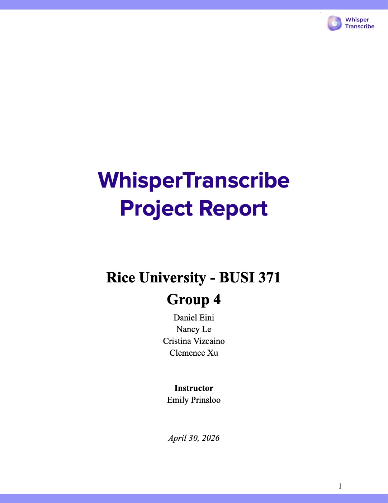

Brand Strategy · Consulting
WhisperTranscribe Brand Strategy
In a four-person consulting team, I worked with the co-founder of WhisperTranscribe, an AI transcription startup, to grow in the U.S. market. We segmented the ~690,000-physician U.S. market into four groups, chose independent and Direct Primary Care doctors (~100,000) as the highest-potential niche, and interviewed physicians. Those interviews uncovered the insight that drove everything: doctors spend 14 hours a week just writing notes.
The result was a competitor analysis, a tested prototype, a four-phase go-to-market plan, and a campaign built around one message: "Stop charting after hours."